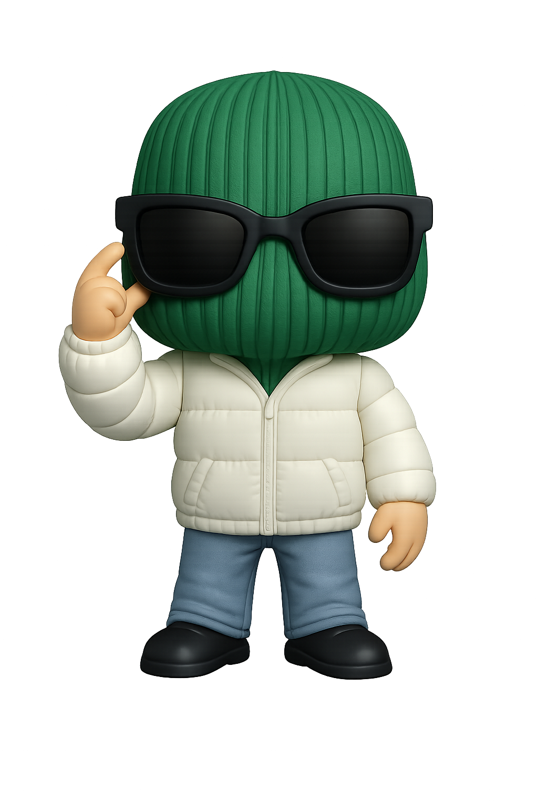

Ander Popu
La necesidad de pertenecer, el alma de la fiesta, lo que canta todo el mundo.
En el universo de
Cinco avatares nacen como una expresión libremente ligada al sistema, al ciclo, a la industria. Cada uno con sus propios objetivos, inquietudes, filosofías, valores y, sobre todo, gustos musicales.
La necesidad de pertenecer, el alma de la fiesta, lo que canta todo el mundo.
La belleza del silencio, cultura y devoción.
El cuerpo como respuesta, exploración y movimiento como única realidad.
El alma oscura, la herida de la creación, bucle infinito.
Mercenario a sueldo, de donde sueldo pasión y memoria.
01
DJ / productor / icono popular
Ander no se vende para gustar. Su pecado es la euforia compartida: esa necesidad de que el ritmo sea de todos, de que la noche tenga un estribillo y de que nadie baile solo.


02
Compositor / critico musical / musico
Asher presta atención al silencio. De hecho, su mayor pecado es disfrutar de los silencios incómodos. Sobre todo los que se producen por desconocimiento.

03
Dancer / deportista y explorador
Leo no cree que la experiencia vivida se pueda superar, por eso para él la propia experiencia es la única fuente de conocimiento. Su pecado es no quedarse quieto nunca.

04
DJ / sound designer / music curator
Es la herida la que siempre habla por Kim, ese es su pecado. Pero su música sigue atrayendo sombras, por eso sigue viviendo.

05
Etnomusicologo / guionista / Don Juan
Su pecado es pertenecer a un linaje de mercenarios. Aunque actúe por dinero, es muy consciente de las consecuencias de su trabajo.

Quinque modi proiectionis, quinque formae evocationis.